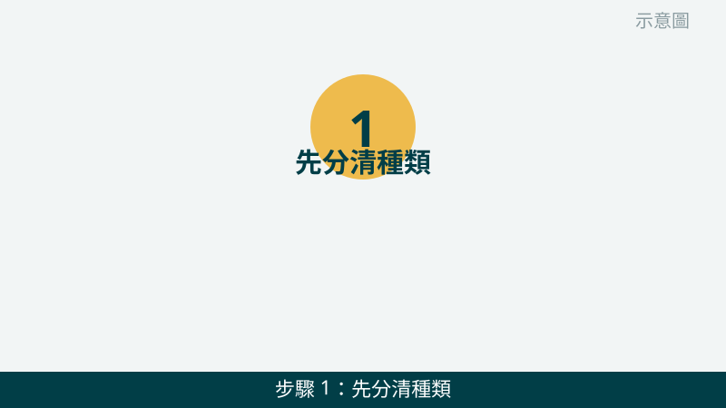
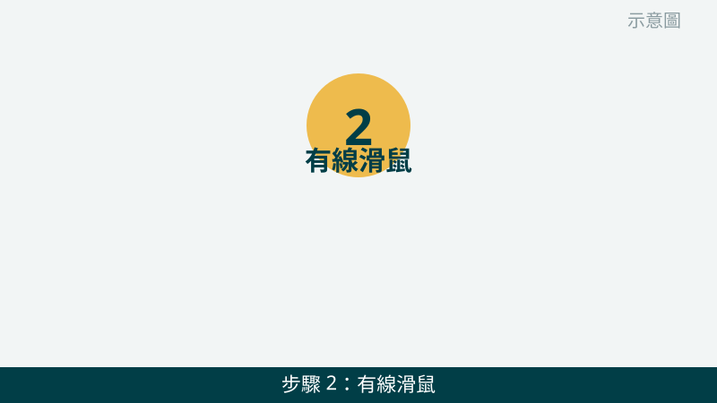
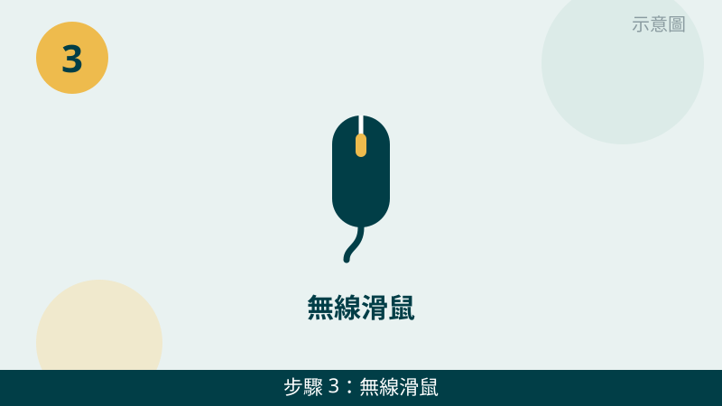
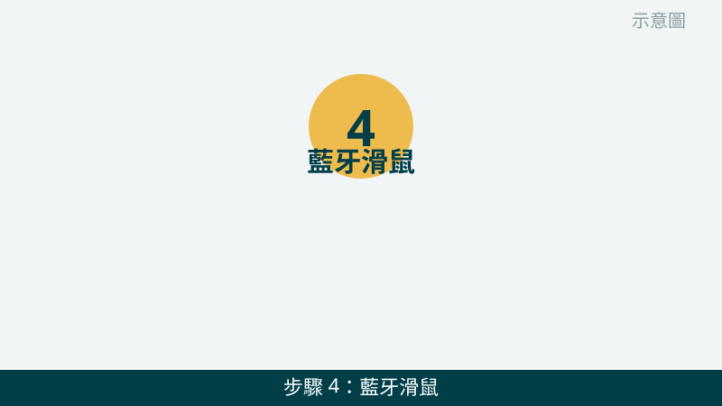
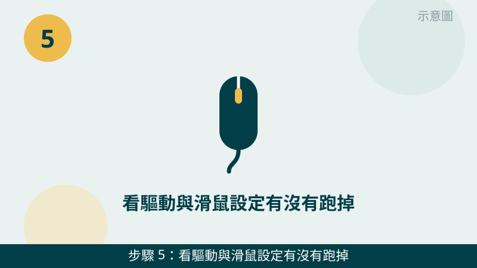
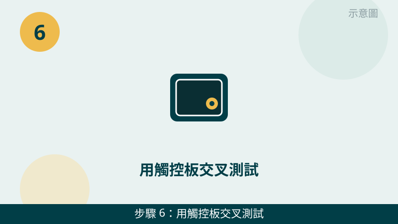

滑鼠沒反應時，請先不要急著認定它壞了。有線、無線、藍牙三種滑鼠，沒反應的原因完全不一樣：有線多半是孔或線的問題，無線多半是電池或接收器的問題，藍牙多半是配對或設定的問題。先看滑鼠底部，確認您是哪一種，再往下對照檢查。
開始之前先跟您說明一個判斷原則：「整台電腦都沒反應」和「只有滑鼠不動」是兩件事。如果鍵盤、觸控板也都不動，可能是電腦當機或系統問題；如果只有滑鼠不動，問題多半就出在滑鼠本身、連線或設定上，照下面檢查會快很多。
滑鼠的狀況先傳給我們看
把滑鼠底部、接收器與設定畫面拍下來傳 LINE，有線、無線還是藍牙的問題，一看就知道往哪個方向查。先免費評估、報價透明，確認後再預約維修。
台中電腦滑鼠沒反應自救檢查清單（由簡到難）
- 1. 先分清種類，看燈號與開關。請把滑鼠翻過來看底部：有線滑鼠看接線與感應燈有沒有亮；無線滑鼠看電源開關有沒有打開、電池倉在哪裡；藍牙滑鼠看有沒有配對按鈕與配對燈號。怎麼判斷：燈完全不亮，先往供電與開關查；燈有亮但游標不動，再往連線與設定查。

示意圖（非官方截圖） - 2. 有線滑鼠：先換一個 USB 孔試試。請把滑鼠線從原本的孔拔下，改插電腦上另一個 USB 孔，最好直接插主機後方的孔，不要經過集線器或螢幕上的轉接孔。怎麼判斷：換孔就動了，代表原本的孔或集線器接觸不良；每個孔都不動，再往設定與交叉測試查。

示意圖（非官方截圖） - 3. 無線滑鼠：先換全新電池，接收器重插一次。請打開電池倉，換上一組全新的電池，並確認電池方向沒有裝反；再把 USB 接收器拔下重插，最好直接插電腦的孔，不要插在集線器上。怎麼判斷：換電池、重插接收器後就動了，就是供電或接觸問題；還是不動，再看第 4 步與第 5 步。

示意圖（非官方截圖） - 4. 藍牙滑鼠：先重新配對一次。請到電腦的藍牙設定裡，把這顆滑鼠移除，再讓滑鼠進入配對模式重新配對；同時確認電腦的藍牙是開啟的，而且附近沒有太多同時連線的藍牙裝置在搶連線。怎麼判斷：重新配對後游標動了，就是配對斷線；配對清單裡根本找不到滑鼠，請先拍照問我們，不要反覆亂按配對鈕。

示意圖（非官方截圖） - 5. 看驅動與滑鼠設定有沒有跑掉。請到裝置管理員看滑鼠項目有沒有出現驚嘆號，再到滑鼠設定確認游標速度、主按鈕左右設定沒有被改掉。如果您不確定哪一項可以動，請先拍照問我們，不要隨便解除安裝不認識的驅動程式。怎麼判斷：設定改回來就正常了，就是設定跑掉；裝置管理員一直認不到滑鼠，再往第 6 步交叉測試。

示意圖（非官方截圖） - 6. 用觸控板交叉測試，確認問題在滑鼠還是電腦。如果是筆電，請先用觸控板操作看看：觸控板能動，代表系統是正常的，問題多半在滑鼠本身；觸控板也不能動，可能是系統當機，請先重開機一次再試。另外也可以借另一顆確定正常的滑鼠來試。怎麼判斷：換一顆滑鼠就正常了，就是原本那顆滑鼠的問題；換誰都不動，請把畫面拍下來傳給我們評估。

示意圖（非官方截圖）
別再自己試了
- 不要自己拆滑鼠、撬微動開關硬修——拆開容易弄斷卡扣或排線，修不回來反而更貴
- 滑鼠進水、電池漏液、聞到異味時，請先停手，不要再通電測試，請先拍照問我們
- 網路上來路不明的驅動程式或一鍵修復工具不要隨便下載安裝，以免越修越糟
- 不確定能不能拆、能不能解除安裝時，一律先拍照問，不要硬試
常見問題
滑鼠燈有亮但游標不動，是滑鼠壞了嗎？
不一定是壞了。燈有亮只代表有供電，游標不動可能是接收器鬆脫、藍牙斷線、驅動出問題，或滑鼠墊表面太光滑、太反光導致感應不良。請先照本文第 2 步到第 5 步換孔、重插接收器、重新配對、檢查設定，換個滑鼠墊表面再試一次，還是不動再請我們檢測。
無線滑鼠換了電池還是沒反應，要先檢查什麼？
請先確認三件事：滑鼠底部的電源開關有沒有真的打開、電池方向有沒有裝反、接收器有沒有插好。很多人是開關沒開，或接收器插在集線器上接觸不良。請把接收器直接插到電腦的 USB 孔，換一組全新的電池再試一次，如果還是不行，請先拍照問我們，不要急著拆滑鼠。
滑鼠沒反應的狀況拍照傳 LINE 就可以先判斷嗎？
可以先給方向。請把滑鼠底部（有線、無線或藍牙的標示、開關與接收器）、電腦的 USB 孔、以及藍牙設定或裝置管理員的畫面拍下來傳給我們，通常能先看出是供電、連線還是設定問題；要完全確認，還是需要實機檢測，這部分評估不收費，請放心傳。
相關文章：自救百科總覽